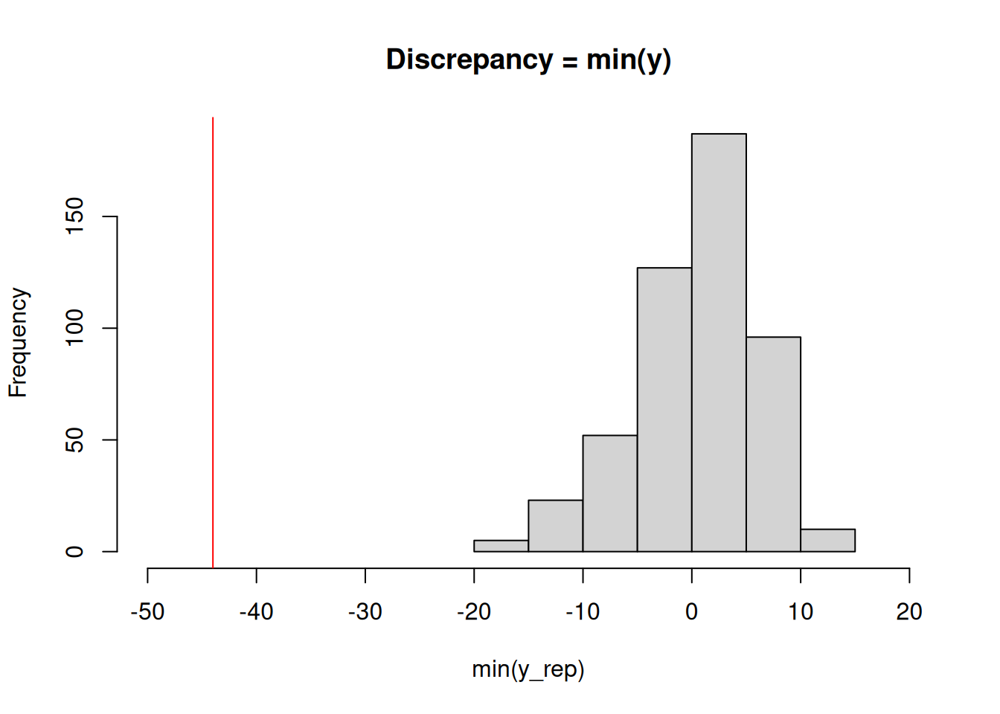

library(nimble)Posterior predictive sampling and other post-MCMC use of samples in NIMBLE
announcement
R
tutorial
Once one has samples from an MCMC, one often wants to do some post hoc manipulation of the samples. An important example is posterior predictive sampling, which is needed for posterior predictive checking.
With posterior predictive sampling, we need to simulate new data values, once for each posterior sample. These samples can then be compared with the actual data as a model check.
In this example, we’ll follow the posterior predictive checking done in the Gelman et al. Bayesian Data Analysis book, using Newcomb’s speed of light measurements (Section 6.3).
Posterior predictive sampling using a loop in R
Simon Newcomb made 66 measurements of the speed of light, which one might model using a normal distribution. One question discussed in Gelman et al. is whether the lowest measurements, which look like outliers, could have reasonably come from a normal distribution.
Setup
We set up the nimble model.
code <- nimbleCode({
## noninformative priors
mu ~ dflat()
sigma ~ dhalfflat()
## likelihood
for(i in 1:n) {
y[i] ~ dnorm(mu, sd = sigma)
}
})
data <- list(y = MASS::newcomb)
inits <- list(mu = 0, sigma = 5)
constants <- list(n = length(data$y))
model <- nimbleModel(code = code, data = data, constants = constants, inits = inits)Defining modelBuilding modelSetting data and initial valuesRunning calculate on model
[Note] Any error reports that follow may simply reflect missing values in model variables.Checking model sizes and dimensionsNext we’ll create some vectors of node names that will be useful for our manipulations.
## Ensure we have the nodes needed to simulate new datasets
dataNodes <- model$getNodeNames(dataOnly = TRUE)
parentNodes <- model$getParents(dataNodes, stochOnly = TRUE) # `getParents` is new in nimble 0.11.0
## Ensure we have both data nodes and deterministic intermediates (e.g., lifted nodes)
simNodes <- model$getDependencies(parentNodes, self = FALSE)Now run the MCMC.
cmodel <- compileNimble(model)Compiling
[Note] This may take a minute.
[Note] Use 'showCompilerOutput = TRUE' to see C++ compilation details.mcmc <- buildMCMC(model, monitors = parentNodes)===== Monitors =====
thin = 1: mu, sigma
===== Samplers =====
conjugate sampler (2)
- mu
- sigmacmcmc <- compileNimble(mcmc, project = model)Compiling
[Note] This may take a minute.
[Note] Use 'showCompilerOutput = TRUE' to see C++ compilation details.samples <- runMCMC(cmcmc, niter = 1000, nburnin = 500)running chain 1...|-------------|-------------|-------------|-------------|
|-------------------------------------------------------|Posterior predictive sampling by direct variable assignment
We’ll loop over the samples and use the compiled model (uncompiled would be ok too, but slower) to simulate new datasets.
nSamp <- nrow(samples)
n <- length(data$y)
ppSamples <- matrix(0, nSamp, n)
set.seed(1)
for(i in 1:nSamp){
cmodel[["mu"]] <- samples[i, "mu"] ## or cmodel$mu <- samples[i, "mu"]
cmodel[["sigma"]] <- samples[i, "sigma"]
cmodel$simulate(simNodes, includeData = TRUE)
ppSamples[i, ] <- cmodel[["y"]]
}Posterior predictive sampling using values
That’s fine, but we needed to manually insert values for the different variables. For a more general solution, we can use nimble’s values function as follows.
ppSamples <- matrix(0, nrow = nSamp, ncol =
length(model$expandNodeNames(dataNodes, returnScalarComponents = TRUE)))
postNames <- colnames(samples)
set.seed(1)
system.time({
for(i in seq_len(nSamp)) {
values(cmodel, postNames) <- samples[i, ] # assign 'flattened' values
cmodel$simulate(simNodes, includeData = TRUE)
ppSamples[i, ] <- values(cmodel, dataNodes)
}
}) user system elapsed
4.243 0.003 4.246 Side note: For large models, it might be faster to use the variable names as the second argument to values() rather than the names of all the elements of the variables. If one chooses to do this, it’s important to check that the ordering of variables in the ‘flattened’ values in samples is the same as the ordering of variables in the second argument to values so that the first line of the for loop assigns the values from samples correctly into the model.
Doing the posterior predictive check
At this point, we can implement the check we want using our chosen discrepancy measure. Here a simple check uses the minimum observation.
obsMin <- min(data$y)
ppMin <- apply(ppSamples, 1, min)
# ## Check with plot in Gelman et al. (3rd edition), Figure 6.3
hist(ppMin, xlim = c(-50, 20),
main = "Discrepancy = min(y)",
xlab = "min(y_rep)")
abline(v = obsMin, col = 'red')
Fast posterior predictive sampling using a nimbleFunction
The approach above could be slow, even with a compiled model, because the loop is carried out in R. We could instead do all the work in a compiled nimbleFunction.
Writing the nimbleFunction
Let’s set up a nimbleFunction. In the setup code, we’ll manipulate the nodes and variables, similarly to the code above. In the run code, we’ll loop through the samples and simulate, also similarly.
Remember that all querying of the model structure needs to happen in the setup code. We also need to pass the MCMC object to the nimble function, so that we can determine at setup time the names of the variables we are copying from the posterior samples into the model.
The run code takes the actual samples as the input argument, so the nimbleFunction will work regardless of how long the MCMC was run for.
ppSamplerNF <- nimbleFunction(
setup = function(model, mcmc) {
dataNodes <- model$getNodeNames(dataOnly = TRUE)
parentNodes <- model$getParents(dataNodes, stochOnly = TRUE)
cat("Stochastic parents of data are:", paste(parentNodes, collapse = ','), ".\n")
simNodes <- model$getDependencies(parentNodes, self = FALSE)
vars <- mcmc$mvSamples$getVarNames() # need ordering of variables in mvSamples / samples matrix
cat("Using posterior samples of:", paste(vars, collapse = ','), ".\n")
n <- length(model$expandNodeNames(dataNodes, returnScalarComponents = TRUE))
},
run = function(samples = double(2)) {
nSamp <- dim(samples)[1]
ppSamples <- matrix(nrow = nSamp, ncol = n)
for(i in 1:nSamp) {
values(model, vars) <<- samples[i, ]
model$simulate(simNodes, includeData = TRUE)
ppSamples[i, ] <- values(model, dataNodes)
}
returnType(double(2))
return(ppSamples)
})Using the nimbleFunction
We’ll create the instance of the nimbleFunction for this model and MCMC.
Then we run the compiled nimbleFunction.
## Create the sampler for this model and this MCMC.
ppSampler <- ppSamplerNF(model, mcmc)Stochastic parents of data are: mu,sigma .
Using posterior samples of: mu,sigma .cppSampler <- compileNimble(ppSampler, project = model)Compiling
[Note] This may take a minute.
[Note] Use 'showCompilerOutput = TRUE' to see C++ compilation details.## Check ordering of variables is same in 'vars' and in 'samples'.
colnames(samples)[1] "mu" "sigma"identical(colnames(samples), model$expandNodeNames(mcmc$mvSamples$getVarNames()))[1] TRUEset.seed(1)
system.time(ppSamples_via_nf <- cppSampler$run(samples)) user system elapsed
0.002 0.000 0.002 identical(ppSamples, ppSamples_via_nf)[1] TRUESo we get exactly the same results (note the use of set.seed to ensure this) but much faster.
Here the speed doesn’t really matter but for more samples and larger models it often will, even after accounting for the time spent to compile the nimbleFunction.